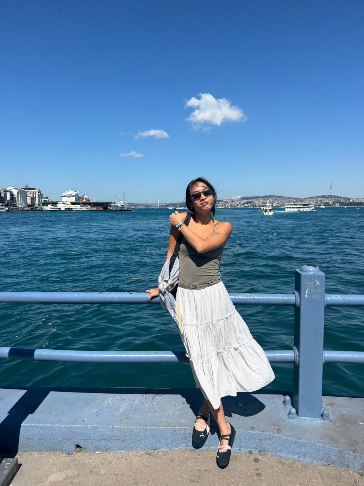

About
Designer and spatial researcher working across architectural design, urban research, visual storytelling, and community-led projects.
Education
- Master's in Architecture & Urbanism (VUT, Brno)
- Bachelor's in Architecture & Sustainable Design (SUTD, Singapore)
Work Experience
- Spatial research and urban design
- Architectural design and project coordination
- Community-driven design initiatives
- Graphic and editorial design
- Marketing and publicity materials
- Project collatorals
- Exhibition design
Languages
- English
- Thai
Technical Skills
- Adobe Creative Suite
- QGIS
- Rhino / Grasshopper
- AutoCAD
- SketchUP
- Canva